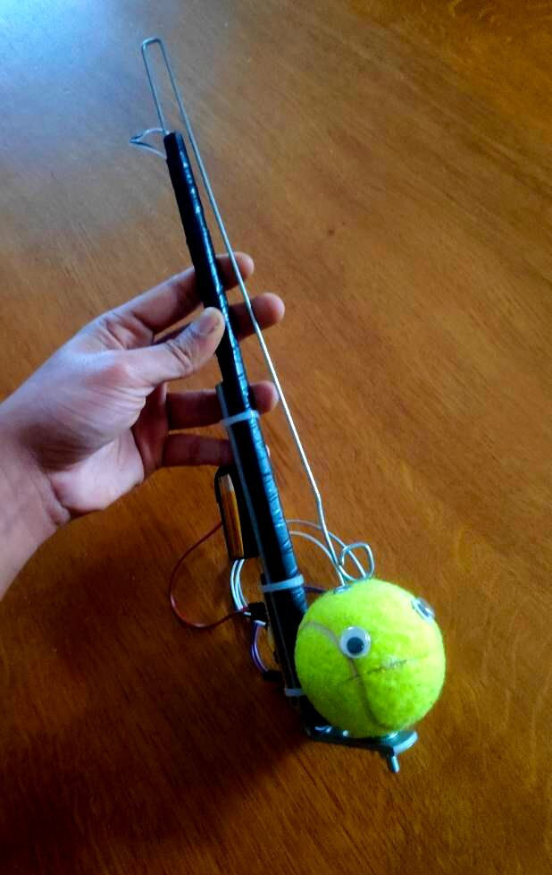
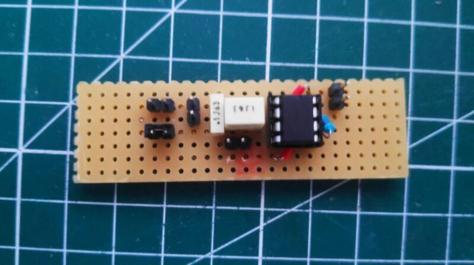
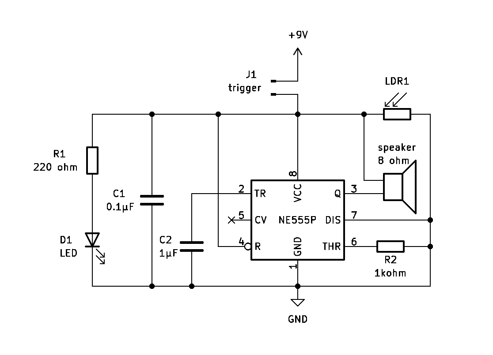
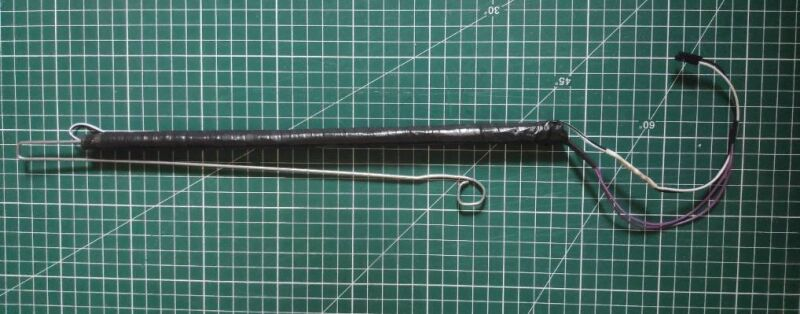
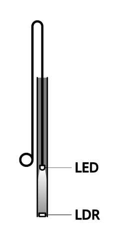
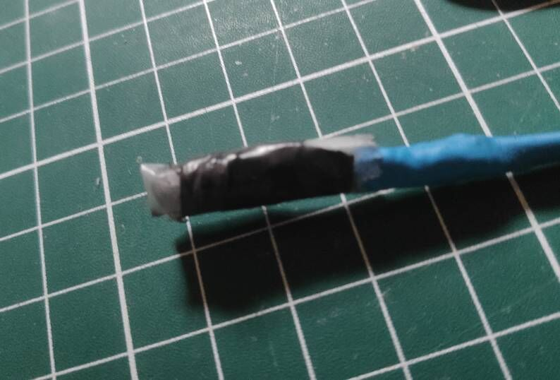
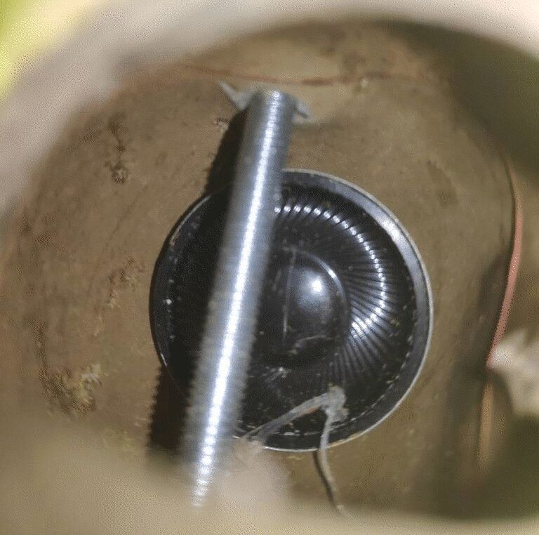

cheapomatone
I made this DIY version of the Otamatone while experimenting with the 555 timer IC.

The result is this silly looking contraption, which I made using components and tools I had on hand.
How it works
 
The main component is a tone generator circuit built around a 555 chip and powered by a 9 volt battery. This circuit generates a square signal whose frequency can be changed depending on the resistance across a light-dependant resistor (LDR1 on the schematics above).
Controlling the pitch

I used Dino's "slider synth" design to control which note is being played. It consists of a cardboard tube with the LDR glued at one end, and an LED placed inside attached to a rod.

As its name implies, a LDR's resistance value depends on the amount of light it recieves. So to change the pitch, the LED is moved up and down the tube: when the LED is close to the LDR, the latter recieves a lot of light. This reduces its resistance, producing a higher pitch. When the LED is higher up, the LDR doesn't recieve as much light, which increases its resistance, lowering the note. This setup gives the cheapomatone a range of about two octaves.

Producing the sound

The tone generator drives a small 8 ohm speaker inside the tennis ball. The sound can be modulated by pressing on the "cheeks", opening and closing the mouth.
Issues
While my goal wasn't to create a practical musical instrument, there are a couple of ways this design could be improved nonetheless:
- Right now the circuit is turned on and off using a jumper. While it is possible to use a push button instead, I haven't found a convenient way to press it while playing.
- Unsuprisingly, the pitch is quite hard to get right. While this is kind of "by design", it is certainly possible to make the slider more reliable.
Ressources
- The original Otamatone
- The 555 Slider Synth
- A basic 555 tone generator